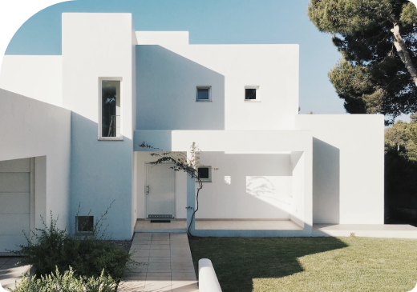

A comfortable space allows for maximum creativity and productivity — Kianu StarrExplore Now

About
KostSamoros adalah bisnis kos mahasiswa yang terletak di kawasan strategis dekat dengan beberapa kampus terkemuka di kota Yogyakarta. Kos ini menyediakan kamar tidur yang nyaman dengan fasilitas lengkap seperti kasur, meja belajar, kursi, dan lemari pakaian untuk menunjang kebutuhan mahasiswa selama masa studi mereka.
Setiap kamar di KosSamoros dilengkapi dengan kamar mandi dalam dan akses ke dapur umum yang dilengkapi dengan peralatan masak dan makan. Kos ini juga menyediakan fasilitas tambahan seperti akses internet, TV kabel, laundry, parkir kendaraan, serta ruang tamu dan ruang makan yang luas untuk keperluan bersosialisasi dan belajar bersama.
KosSamoros menawarkan harga sewa yang terjangkau dan sesuai dengan fasilitas yang disediakan. Pemilik bisnis juga memberikan pelayanan yang ramah dan responsif kepada mahasiswa yang tinggal di kos ini. Selain itu, kos ini juga memiliki keamanan yang baik dengan dilengkapi CCTV dan penjaga keamanan untuk memastikan keamanan penghuni kos.
Article
Tips Hemat untuk Mahasiswa
Berikut ini adalah beberapa cara hemat sebagai mahasiswa yang dapat kamu lakukan: Gunakan fasilitas kampus, gunakan transportasi umum, bawa bekal dari rumah, beli barang di promo atau diskon, jangan tergoda gaya hidup konsumtif, gunakan aplikasi pengelola keuangan, dan hindari utang yang tidak perlu.
Tips Tetap Produktif untuk Mahasiswa
Berikut ini adalah beberapa tips produktif untuk mahasiswa yang dapat kamu lakukan: Buat rencana jelas, gunakan teknologi dengan bijak, buat ruang belajar yang nyaman, tetap aktif berolahraga, kelola stres dengan baik, belajar dengan kelompok studi, dan jangan ragu meminta bantuan. 😉